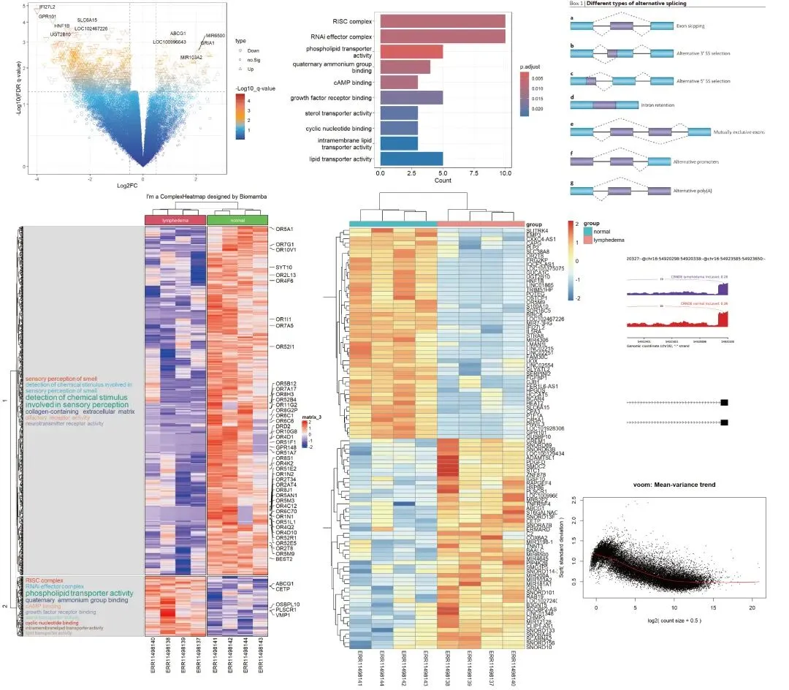
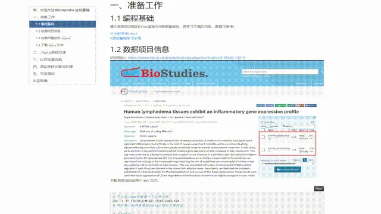
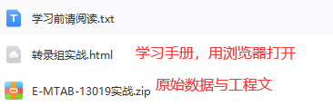

Bulk RNASeq| 转录组实战
原文：https://mp.weixin.qq.com/s?__biz=MzAwMzIzOTk5OQ==&mid=2247510793&idx=1&sn=bfa69e8f261932d9bea74443fab732f0&chksm=9b3cd259ac4b5b4fd4b3bb80d0210a3396cda777b32ab49be1a45339453db314bb2a17fc438d#rd 合集：Bulk RNA-seq

学习手册

 很多同学希望我们能够出一个Bulk RNA-Seq的教程，我个人也觉得很有必要，毕竟能算作scRNA-Seq的前课。这里我们利用E-MTAB-13019数据集为例，通过Rmarkdown的形式编译成了一个学习手册(HTML文件，用浏览器打开，在文末获取)，其中包含了代码、测试文件和输出结果。希望该手册可以帮助大家完成Bulk RNA-Seq分析的一站式学习 ：
分析图片集锦
很多同学希望我们能够出一个Bulk RNA-Seq的教程，我个人也觉得很有必要，毕竟能算作scRNA-Seq的前课。这里我们利用E-MTAB-13019数据集为例，通过Rmarkdown的形式编译成了一个学习手册(HTML文件，用浏览器打开，在文末获取)，其中包含了代码、测试文件和输出结果。希望该手册可以帮助大家完成Bulk RNA-Seq分析的一站式学习 ：
分析图片集锦

-Biomamba

所见即所得


解锁前需阅读：龙年订阅须知

文末还可解锁以下内容


，龙年订阅合集持续更新中，联系客服微信[Biomamba_yunying]可以以119￥获取全部资料(包括今年后面更新的内容)。当然，付费不是目的，以下资料都可以通过转发领取(更推荐这种方式)。
龙年订阅须知 单细胞Figure 1常见图表 快速上手Seurat V5 机器学习基础手册 scRNA-Seq学习手册Seurat V4修订版

订阅后获取学习手册下载链接：